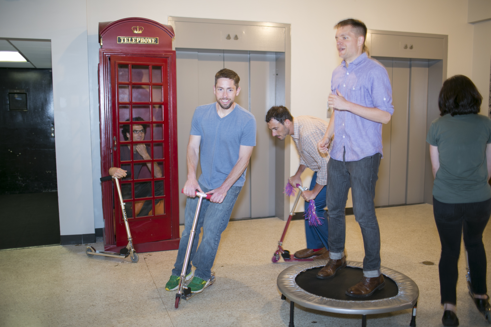
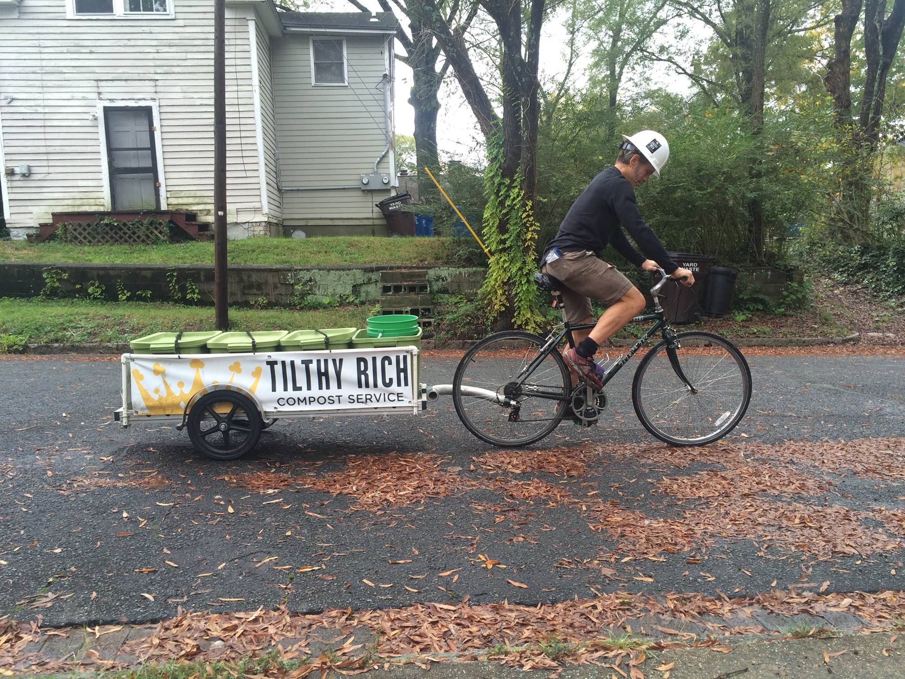
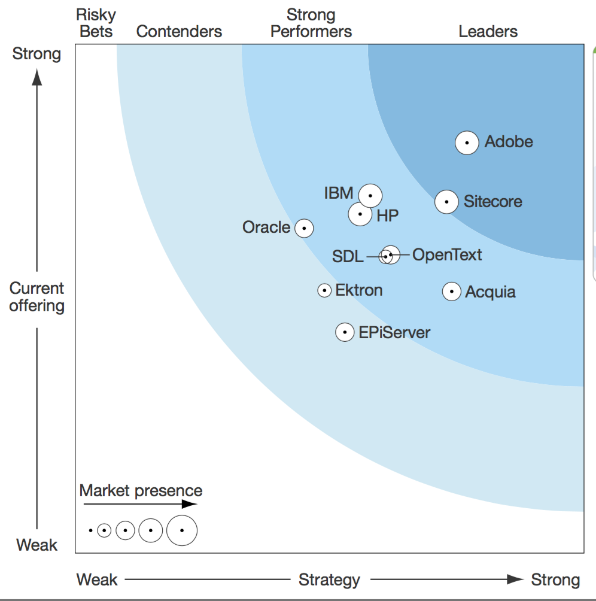
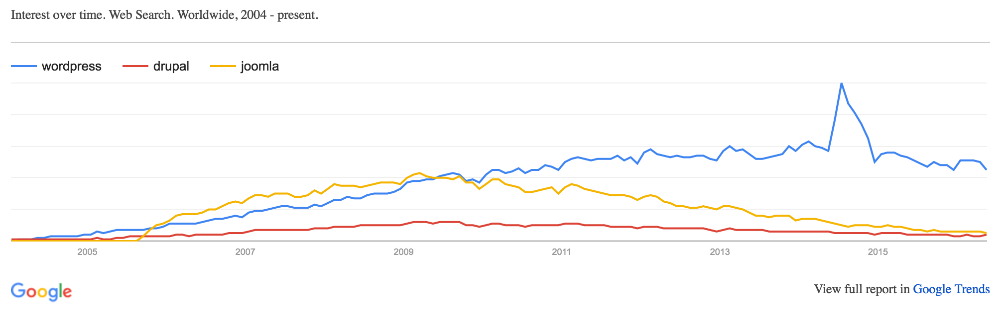

Savas Labs
Chris Russo
Total value of ownership
Drupal 8 and beyond
Who we are
Where we are

... or maybe this helps more?

We're also in
BostonMA
 Truckee
Truckee CA
 Chicago
Chicago IL

Who I am
Work me

Real me
Other things I've done

Who are you?
My roots

What we're talking about today
Total value of ownershipDrupal, where it fits in the CMS world, and why it matters to you
Who are the proprietary players out there?


Proprietary CMS leaders
Proprietary CMS leaders

Open source leaders


Open source: who to watch


Open source CMSes =
~80%
Where does Drupal fit in?

Where does Drupal fit in? 2017-Apr-11 snapshot.
Market Trends
What is value?
...smart people working real time on solving problems and creating new value.Measuring Drupal's value
https://www.openhub.net/p/drupalDrupal's value
according to Cocomo
- Lines of code: ~1.2 million!
- 194 person-years of work!
Drupal's value
active community

Drawbacks to Drupal: Steep learning curve

Drawbacks to Drupal
- Major version upgrades are
impossibletough - Historically very developer-oriented
How is Drupal 8 doing?
Adoption

Adoption in Drupal 7

Adoption in Drupal 8 - Today's snapshot 2017-Apr-11
Slower adoption in Drupal 8
Potential causes
- Migration difficulties
- Key contrib slowness
- Signficant architectural changes
What does this mean to you?
- Learning curve is substantial
- Above average developer salaries
- Historically developer-oriented community now embracing UX professionals and designers - YMMV
The end!
@Savas_labs